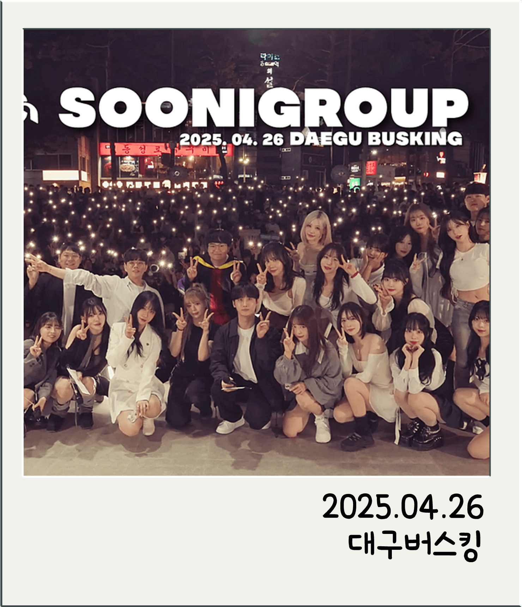
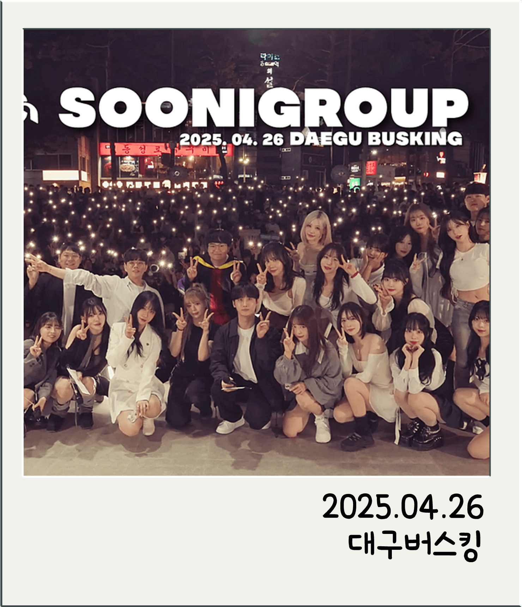

SOONI GROUP
수니그룹은 노래와 댄스를 중심으로 활동하는 ‘회사 콘셉트’의 방송 크루입니다.
인기 드라마 ‘재벌집 막내아들’ 속 가상 기업인 ‘순양그룹’이라는 이름을 모티브로 만들어졌습니다.
주 컨텐츠를 책임지는 수니뮤직과 수니엔터,
자유롭게 활동하는 수니게임즈, 그리고 여캠부가 존재합니다.
멤버 중에는 가수, 전직 아이돌, 댄스 강사, 보컬 트레이너, 여겜비 등 다양한 경력을 가진 인물들이 있습니다.
운영 방식은 비시즌과 시즌으로 나뉘며,
- 비시즌에는 개인방송, 합방, 휴방 등 자유로운 활동과 재정비의 시간을 가집니다.
- 시즌에는 멤버 간 콘텐츠로 몰입감을 높이고, 수니콘 무대 연습에 집중하게 됩니다.
수니그룹의 주요 활동 콘텐츠에는 수니콘,드림콘,버스킹,MT,최종점검 방송 등이 포함되어 있습니다.

 
